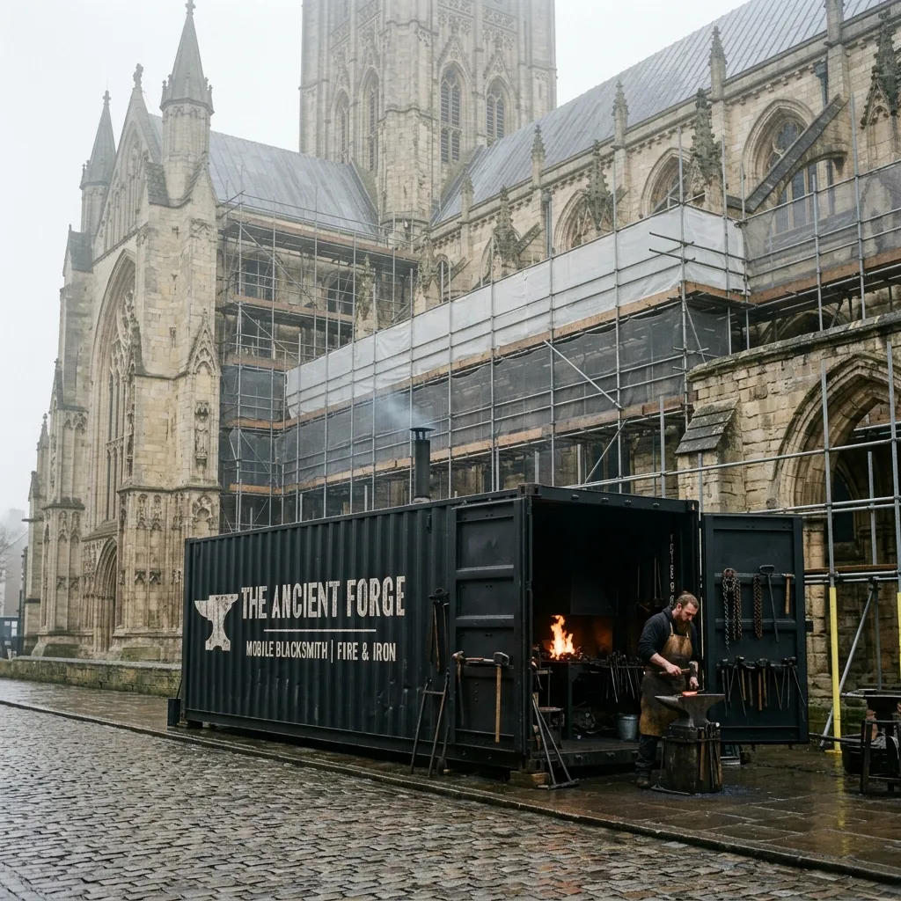
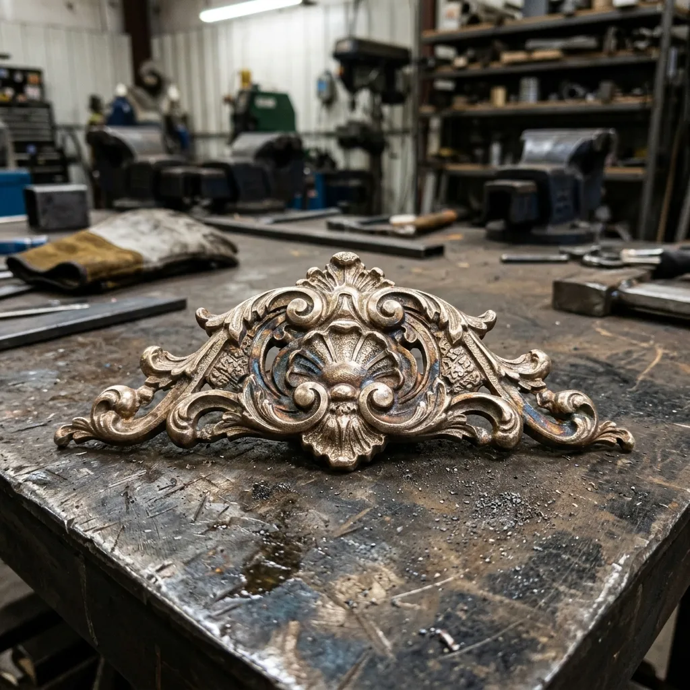

Mobile Thermal Logistics & On-Site Casting Mechanics
Off-site restoration introduces variables that heritage architects cannot afford. Thermal contraction differences, road vibration fractures, and delayed lead times often turn minor ironwork repairs into costly replacements. Our Vulcan-01 mobile unit resolves this by establishing a controlled foundry environment within twenty metres of your building’s elevation.
Equipped with a 150kW electric induction furnace, three-ton overhead gantry, and closed-loop water cooling systems, the unit operates entirely off-grid via onboard silent generator power. We perform ceramic shell investment moulding, molten bronze pours, and hot forge welding directly on-site. This immediate proximity allows our smiths to take direct silicone impressions from original surviving masonry fittings, pour matching bronze or iron alloys within six hours, and hand-fit handrails or cresting without transit delays. We contain all thermal runoff, capture emissions through HEPA filtration banks, and deliver foundry-grade structural ironwork without altering the historic site's footprint.

100% On-Grid / Off-Grid Independence
Autonomous Power
Technical Capabilities
Furnace Specifications
Our core induction system operates at peak efficiency, reaching 1,200°C to handle the most demanding historic metallurgical demands. With a robust 250kg melt capacity per pour, we maintain tight thermal controls essential for preventing casting defects in intricate heritage ornaments.
Alloy Expertise
Precision matching of historic metals dictates structural longevity. We forge and cast Silicon Bronze and Phosphor Bronze for corrosion-resistant marine and cathedral applications. For Victorian and Georgian structures, our founders utilise Grey Iron and Ductile Wrought Iron to match the tensile integrity and carbon structure of original 18th-century fabrications. We execute carbon steel annealing in-house to relieve internal mechanical stresses before final fitting.
Deployment Metrics
Site Footprint
The Vulcan-01 occupies a standard 40-foot ISO container dimension. We mandate strict 16-tonne clearance requirements for the delivery low-loader, ensuring the structural integrity of ancient paving or delicate courtyard substrates remains intact.
Emission Control
Zero-emission exhaust filtration is active during all operations. Multi-stage HEPA banks capture vaporised particulate and cooling slag off-gassing, guaranteeing compliance with urban clean air zones surrounding Grade I listed monuments.
Restoration Credentials & Heritage Proof
Structural intervention on historic fabric requires absolute metallurgical certainty. Hearth & Anvil Foundry operates under stringent ISO 9001 quality management protocols. Our techniques comply fully with the conservation guidelines set by English Heritage and Historic Environment Scotland, ensuring minimum intervention and strict like-for-like material replacement principles.
Recent deployments include the complete bronze gate restoration at York Minster, where our unit facilitated immediate lost-wax casting of corroded finials. In the southwest, we executed a comprehensive ironwork overhaul at Bristol Floating Harbour, employing heavy wrought iron repairs directly on the quayside without jeopardising the delicate marine retaining walls.

Download Metallurgical CertificationsMobile Foundry FAQ
What are the site access requirements for the mobile forge?
We require a stable, reinforced hardstanding measuring at least fifteen by five metres to accommodate the forty-foot unit. The delivery low-loader needs a turning circle appropriate for heavy goods vehicles, and overhead clearance must exceed four point five metres to prevent structural fouling.
How do you manage noise suppression during active pours?
The Vulcan-01 is heavily insulated with acoustic dampening panels. While the induction furnace emits a low-frequency hum, we restrict our mechanical preparation and casting cycles to standard site working hours, keeping ambient output below seventy-five decibels at a distance of five metres.
Does the foundry require external power and water supply?
No external connections are necessary. The unit operates entirely off-grid using an onboard silent diesel generator equipped with hospital-grade silencers. Our closed-loop water cooling system recycles its internal reservoir, ensuring we draw zero resources from your active restoration site infrastructure.
What are the lead times for mobile deployment?
Following the initial structural survey, standard deployment occurs within fourteen to twenty-one days. For catastrophic failures or emergency structural stabilisation requirements, we can mobilise our secondary rapid-response unit to your location within forty-eight hours of contract signature.
How do you ensure environmental emissions compliance?
All thermal operations occur within a sealed internal environment. Our industrial extraction system pulls air through a four-stage HEPA filtration bank, capturing metallic vapours and casting smoke. This zero-emission exhaust allows us to operate adjacent to sensitive masonry and public zones.
Site Dispatch & Deployment Enquiry
Initiate the mobilisation of our mobile foundry to your restoration project. We operate across the United Kingdom, delivering architectural metallurgy directly to the scaffold line. Our process ensures absolute precision.
Scaffold Survey
Our master founders conduct a rigorous physical inspection of the damaged ironwork or bronze fittings directly on your scaffold to assess the required intervention.
Alloy Analysis
We take samples for spectrometer testing, formulating a precise metallurgical match to guarantee correct thermal expansion and tensile strength characteristics.
Low-Loader Deployment
The Vulcan-01 arrives on-site. We establish our secure perimeter, initiate the induction furnace, and commence casting and structural repairs within hours.
Emergency Structural Iron Stabilisation: +44 114 496 0999